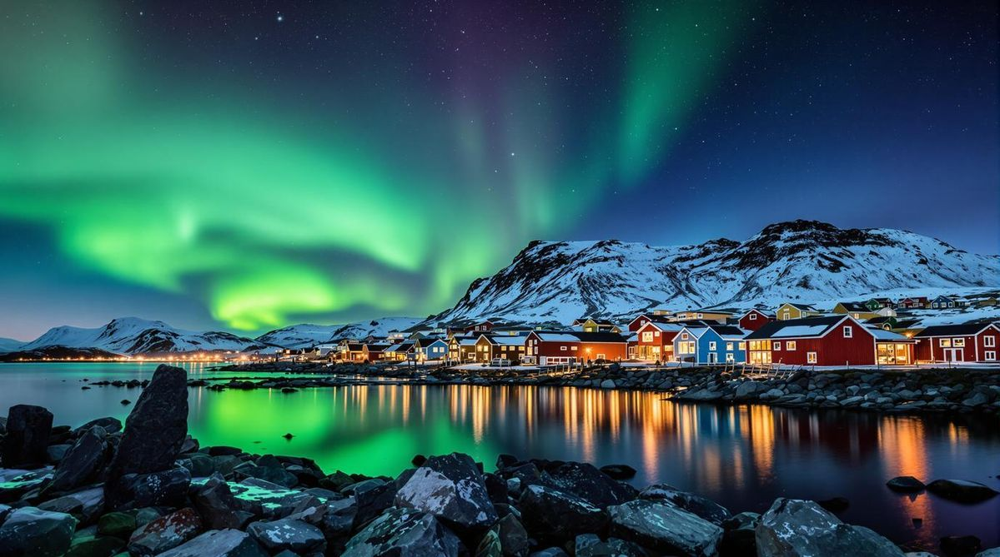
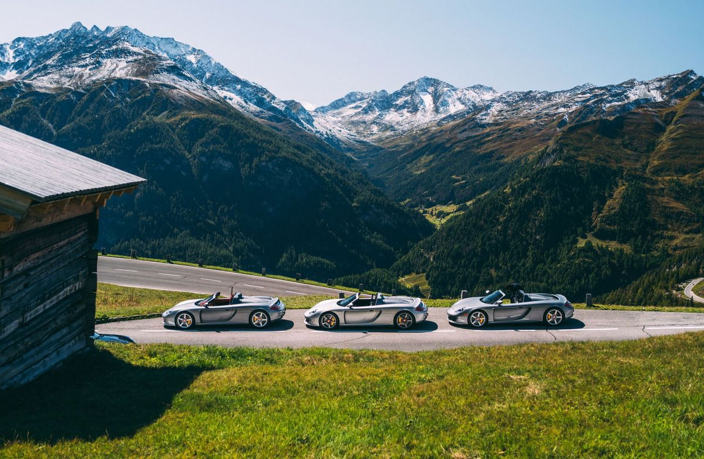
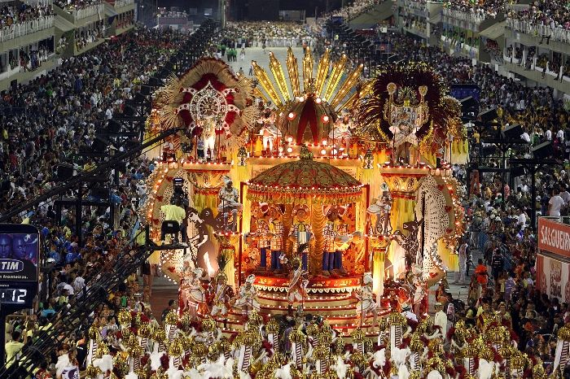

My Bucket List
Things I want to achieve and experience

Hot air balloon ride
I’ve got this vision of myself standing in a wicker basket in the middle of Turkey, probably freezing in the 4:00 AM chill while waiting for the sun to hit the Anatolian plains. Honestly, I’ve seen the photos of Cappadocia all over my feed for years, but I’m tired of just double tapping them because I actually want to be the one up there. I want to feel that weird, heavy heat from the burner hitting my face while everything else is dead silent, just drifting over those fairy chimney rock formations like I’m on another planet. There’s something so surreal about the idea of looking out and seeing a hundred other colorful balloons hitting the horizon at the exact same time the sky turns that perfect shade of sunrise pink. It’s definitely a splurge, but between the cave hotels and the traditional champagne toast once we land in some random field, it feels like the ultimate trip. I’m putting this on my bucket list because I need to experience that specific kind of peace you can only get a few thousand feet up, watching the world wake up before the rest of the tourists even have their coffee.

Watch a live NBA game
I’ve spent way too many nights watching highlights on a tiny laptop screen, so actually being in an NBA arena is a massive priority for me. I want to experience that specific moment when the lights go dim, the bass from the intro music starts shaking the floor, and the starting lineup is announced through a cloud of smoke and pyrotechnics. It’s not just about the game; it’s about finally seeing the sheer scale of the players in person and realizing how much faster and more intense the play is when you aren't watching through a camera lens. I want to be part of that collective roar when the home team hits a massive three-pointer, and I’m honestly looking forward to the whole stadium vibe the overpriced nachos, the t-shirt cannons during timeouts, and the energy of thousands of people pulling for a win. For me, it’s about checking off a major piece of sports culture and finally being in the stands for a buzzer-beater instead of just reading about it on Twitter ten minutes later.

Experience the Northern Lights
I want to be standing in the middle of the Icelandic wilderness, probably somewhere near a massive frozen waterfall or a black sand beach, just waiting for the sky to literally catch fire. I’ve spent way too much time staring at edited photos on Instagram, but I want to be the one standing there in person when those neon greens and purples start dancing across the horizon. It’s not just about the light show; it’s about that specific kind of silence you only get in the Arctic Circle, where everything feels still and massive at the same time. I want to feel that rush of adrenaline when someone finally shouts that they see a faint glow, and then suddenly the whole sky is shifting and pulsing right above my head. It feels like the ultimate test of patience and luck, but finally seeing the Aurora Borealis in a place as rugged as Iceland would be the peak of any trip I ever take. I’m putting this on my list because I need to experience that small in the world feeling that you can only get from watching a natural phenomenon that looks like it belongs in a sci-fi movie.

Drive through the Swiss Alps
I’ve spent way too many hours watching POV driving videos on YouTube, so I’m ready to actually be the one behind the wheel on those insane mountain passes in the Swiss Alps. I want to feel that perfect mix of adrenaline and focus while I’m navigating those tight hairpin turns on the Furka or Stelvio Pass, with nothing but a massive drop off and the most unreal glacial views on the other side of the guardrail. There’s something so cool about the idea of shifting gears while surrounded by these towering, jagged peaks that look like they’ve been photoshopped into the background. I’m looking forward to that specific crisp mountain air hitting my face when I roll the windows down, and the sound of the engine echoing off the rock walls as I climb higher into the clouds. It’s not just about getting from point A to point B; it’s about that total sense of freedom you get on a wide open road where every single turn looks like a postcard. I’m putting this on my list because I need to experience that top of the world feeling for myself, pulling over at some random overlook just to take in the silence and the sheer scale of the mountains before heading back down into a tiny alpine village.

Attend a Carnival in Rio de Janeiro
I honestly think I’ve been obsessed with the idea of Carnival ever since I saw the movie Rio when I was a kid. I still have that vivid image in my head of the entire city exploding in blue feathers and insane music while those colorful floats rolled through the streets. I want to be in the middle of that massive sea of glitter in Rio de Janeiro and feel the ground literally shaking from the drums of the samba schools. There is something so insane about the idea of being at a street party at 2:00 AM where the energy of millions of people just takes over and the music never stops in the heat. I want to see those huge floats that look like they cost a fortune and watch the world's best dancers move so fast it doesn't even look real. It’s not just a party; it’s like a total sensory overload of neon colors and the kind of pure joy you only get when an entire country is celebrating at once. I’m putting this on my bucket list because I need to experience that peak level of human energy and see if the real life version is even more wild than the movie that started it all.